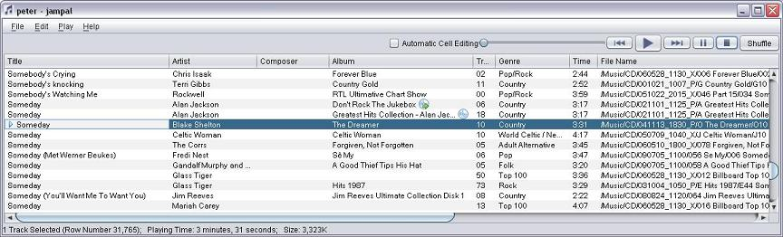
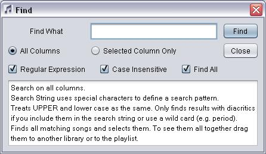
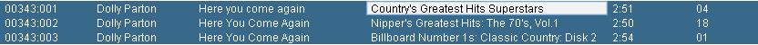
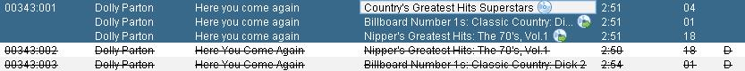

Display
The columns displayed depend on which template was used to create
the library and whether you have made any customizations.

If a song is currently playing or is the last song played it is
shown with a play symbol () next to
the title, regardless of whether it is selected or not. See "Alternate Album"
below for explanation of the CD images.
Selecting tracks
Many options require you to first select one or more tracks in the
library. Select one track by clicking it with the mouse or using
the up or down keyboard arrow. Select many individual tracks by
holding "control" and clicking them. Select a range by using
"shift" and clicking them. If you sort the library or use
"shuffle", your selection is lost.
One cell of a selected row will display in default "unselected"
colors. This shows the cell that can be edited using the "edit
cell" option (see below).
Menu
File, Open Library
This allows you to open an existing Jampal Library or to create a
new one. It will present an "open" dialog where you can select a
file with "jampal" extension to open an existing library, or type
in any name to create a library. This will open a new window for
the library (i.e. you will then have two library windows open).
File, Add Tracks to Library
This presents an "open" dialog where you can either select one or
more "mp3" files or select one or more directories. If you select
mp3 files they will be added to the library. If you select
directories, the directory and all directories under it will be
scanned for mp3 files and they will be added to the library. All
files will be added to the end of the library and then will be
highlighted. If any of the tracks already exists in the library it
will be moved to the end of the library with the others that are
added. No track will appear twice in the library.
There is a checkbox on the right of the open dialog "Click here to
remove ID3v2 tag". This is provided in case you have an mp3 file
with corrupted tag. If you find when adding a particular file to
the library or when using the tag editor on a particular file that
you get an exception message or the program stops responding
correctly, it may be a corrupted tag. Using this checkbox will
remove existing ID3v2 information from the file and allow you to
add it to the library and create a new tag. When selecting this
checkbox you can only select one file at a time and cannot select a
directory.
File, Open Playlist
This opens the playlist window and shows any titles already in the
playlist.
File, Save Playlist as file
You can save your playlist in two ways, as an "m3u" file or an
"m3j" file.
An "m3u" file stores the file names in your play list and can be
used with jampal or many other players, for example you can open it
with Microsoft Media Player or Musicmatch Jukebox.
An "m3j" file stores only the song names and artists. The playlist
can be opened and played with Jampal. This has the advantage that
if files are later renamed or moved, they can still be played as
long as they are still in your jampal library.
A "save" dialog will open. After you enter an appropriate location
and name, the current playlist will be saved.
File, Load Playlist from file
An "open" dialog will open. You can select an existing m3u file or
an m3j file. All songs referenced in that file will be added to the
playlist after the first selected row and then will be highlighted.
If there are any entries in the saved playlist more than once, only
the last one of each duplicated name will be kept, the others will
be removed.
File, Save Library
Any updates, deletes, additions that you have made to the library
will be merged into the library stored on disk. Note that this is
done automatically upon closing the window. Also note that failure
to save the library will not cause any updates to be lost even if
the system fails. The only purpose behind saving the library is in
case you want to read it into a spreadsheet or other program
without first closing jampal.
File, Reload Library
The library is reloaded from disk. The only purpose of this is in
case the library was updated by some external process. For example
if you have a program that renames files on disk and updates the
names of files in the library.
Edit, Add Tracks to Playlist
Before invoking this you must select one or more tracks in the
library. These will be added to the end of the play list. If the
playlist window is not already open it will be opened.
Edit, Find
Displays a "find" dialog box.

This dialog offers advanced searching of the library.
|
Field
|
Explanation
|
|
All Columns
|
If you select this radio button all data that is displayed on
screen for songs is scanned for the entered text, including
file names.
|
|
Selected Column Only
|
This radio button is available if there is a selected cell,
which is the last cell clicked and is indicated by a slightly
different border from other cells. If you select this radio
button the data that is displayed on screen in the column that
contains the selected cell is scanned for the entered text.
|
|
Regular Expression
|
If this checkbox is checked the input text is treated as a
Regular Expression . Regular
Expression syntax is very powerful but somewhat arcane. For
example to find titles that have no lowercase characters use
this pattern: ^[^a-z]*$ with the case sensitive option
unchecked. To find all titles that start with "man" and end
with "dog": ^man.*dog$. If you want to match the entire string
start the pattern with ^ and end it with $, otherwise it will
match to any part of the string. For more information go
here .
|
|
Case Insensitive
|
If selected, this means that it will match strings regardless
of case. When used with Regular Expression unchecked,
also ignores diacritics.
|
|
Find All
|
Find all matching songs,select and highlight them. Be careful,
if you click in the library window they may become unselected.
The best way to see them all is to open another library or the
playlist, left click one of the selected songs and drag to the
other library or playlist (or use copy and paste). All of the
selected songs will be instantly displayed there.
|
Below is an explanation which changes as you click different
options.
Edit, Edit Track Tags
Opens the track editor window and shows the values applicable to
any track selected, or the first track selected.
Edit, View Track Properties
Opens a pop up window that displays technical data about the mp3
file. Fields displayed are File Name, File Size, Mpeg Version, Bit
Rate, Sample Rate, Channel Mode, Emphasis, Playing Time, Tag Size,
Tag Type, Frames. This displays all frames in the track, unlike the
library which only displays the id's of frames not already shown in
the library. For a list of the meanings of frames look in the
Tables and ID3
Frame Descriptions sections of the help. Also if the Track
Properties window is open and you change the track selection, the
track properties window will dynamically update to show the new
selected track.
Edit, Delete Tracks From Library
Deletes selected tracks from the library. Does not delete tracks
from the hard drive. You can add them back at any time.
Edit, Copy
Copies selected tracks to the clipboard. They can be pasted into
Windows Explorer, or into the same library at a different place, or
into another library or playlist, or into another application that
accepts dropped files.
Edit, Paste
Paste into the library, files that have been copied in the same or
another library, or files that have been copied from Windows
Explorer.
Edit, Validate Tracks
This will validate the selected tracks, making sure the mp3 files
exist. If any are not found (i.e. they have been renamed) it
searches through the parent library for matching title and update.
The parent library is the library from which you opened the current
library. This menu option can be used on a playlist or library
containing songs that have been renamed in the main library.
Even if the file did exist, it reloads the library from the song
information, so if any changes were made outside of Jampal (with
another program) this will refresh the Jampal library with those
changes.
When you play a song it also performs the search for a renamed song
when the file is not found.
Edit, Clear Library
Clears the library. Does not delete tracks from the hard drive. You
can add tracks to the library again at any time.
Edit, Edit Cell
Edit the current selected cell directly in the grid. You can also
do this with Ctrl-E or F2. The current selected cell is displayed
in the deafult background color while the reset of the selected row
is displayed in a different color. When data are edited in the grid
you update the mp3 file as well as the library.
Edit, Automatic Cell Editing
This works the same as clicking the Automatic Cell Editing
Checkbox. See the description below.
Edit, Combine Duplicates
If you have two copies of the same song from different albums, this
can help save disk space. Sort the library by track name and artist name.
If you find two, or more copies of the same song with different albums,
select all of the songs one at a time while holding the control button.
Decide which one is the main album for that song (for example the album on
which it first appeared). Still holding the control button, unselect and
reselect that one (or just make sure you selected it last in the first place).
Now you should see all of the songs highlighted and one will have the
"focus" rectangle.

Then select the "Edit, Combine Duplicates" menu and it will create
"alternate albums" and mark the unwanted copies with D in the Jampal
column.

Before doing this you must add the *JAMPAL field to your library.
Tracks which are marked with D are shown struck out.
This can be used in conjunction with the "mp3dup.sh" script which
finds duplicate or potential duplicate songs and creates a separate
library for them. The mp3lib.sh script can move the tracks marked with D
to a directory for trash songs. You can manually review them before finally
deleting them.
Edit, Customize
Customize your library. See the full description on the Customization page.
Edit, Font
Select the font used for displaying and inputting track
information. Use this when you have tracks with non-English
characters that do not display in the default font.
Play, Play/Pause
Equivalent to clicking the play button if nothing is playing in
this window, or the pause button if it is.
Play, Stop
Equivalent to clicking the stop button.
Play, Previous
Equivalent to clicking the back button.
Play, Next
Equivalent to clicking the forward button.
Play, Shuffle
Equivalent to clicking the Shuffle button.
Play, Announcements
Activates a synthesized announcement of before each song is played.
By default this is title and artist but this can be customzed. This
works on certain systems with a speech generation engine installed.
Many speech engines are supported.
You can customize the speech engine
with the "customization" feature.
You can announce your song titles in the language
that matches the song name. There is a Voices tab in the
configuration dialog that allows you to select voices to be used
with each song language. You can select for each language which
engine and voice will be used.
You can assign more than one language to a song. This will be
useful if the language for the announcement should be different
from the main laguange for the song. Announcements use the last language
in the list.
Play, Continuous
In a playlist this plays songs without a break between one and the
next. In both the playlist and the library this will cause
announcements to overlap the music and to avoid gaps between one
track and the next.
Top of Window
Song Name
This displays the name of a song if there is one currently playing.
Automatic Cell Editing Checkbox
This is the same as selecting "Automatic Cell Editing" from the
Edit menu. (See Edit, Edit Cell above). If this is checked,
some functions in Jampal change. In the table of songs, the cell
that is selected will automatically be edited. Only editable fields
are edited (values like Bit Rate or Playing Time cannot be edited).
To update many songs or fields all you need to do is type into the
table and tab from one field to another. This avoids the need to
press F2 or select "edit cell" to edit a cell. In this mode of
operation some features are unavailable. Searching on the sort
field by typing the start of a name is not available, and double
clicking a song to play is not available. Note that to update many
songs with a constant value (e.g. to update the album name on 14
songs) it is easier to select multiple songs and use the tag editor
rather than pasting into the cells on the library page.
Play Time
The time played in this song followed by the total length of the
song, both in minutes and seconds.
Slider
Shows the progress of playing this song. You can drag this to a new
location to skip to a different place in the song.
Player Controls
Rewind: Goes to start of
song or to previous song.
Play: Play First Song
Selected in library.
Next: Goes to next song
Pause: Pause playing. To
resume click Play.
Stop: Stop Playing.
Shuffle
Sorts Library into random sequence.
Title Row
The title for each column is shown here. The columns can be
customized (see Customization). The
columns marked A, B, C are customized fields you can use for any
purpose, or you can customize them with your own names.
Resizing
Columns can be resized by dragging the line between columns.
Sorting
Clicking on the header for a column sorts the list on that column.
Clicking on another column then sorts on the second column while
retaining the previous sort. So for example if you click first on
title then on artist you will have it sorted by title within
artist. A triangle indicates the sort column and smaller triangles
indicate the two prior sort columns. Clinging a column a second
time reverses the sort order. The sort ignores "the" and "a" and
parenthesized text at the beginning of titles or artists.
Moving Columns
Columns can be dragged left or right to change the order of
columns. This change is temporary, it will revert next time the
library is opened.
Table Data
Alternate Album
Jampal is able to identify tracks that exist in two or more albums,
even when there is only one copy of the song on the hard drive.
Additional entries in the library are identified by a CD with an arrow
 next to the album. Songs which have
additional album entries are identofied by a CD
next to the album. Songs which have
additional album entries are identofied by a CD  next to the album. See the "combine duplicates" menu item described above and
Track Editor Window for details.
next to the album. See the "combine duplicates" menu item described above and
Track Editor Window for details.
Search
If the table has been sorted (triangle displayed in a header),
click in the table and start typing the first few letters in the
beginning of an entry to quickly jump to a place within the table.
The text that you are typing is displayed in the status bar at the
bottom. If you want to start a new search, press Escape and start
typing again. When searching in this manner it ignores diacritics
and upper case characters. If searching on a title or artist column
it also ignores leading "a", "the", special characters and
parenthesized text. The backspace key can be used to correct errors
while typing.
Cell Editing
To edit without opening the tag editor, click in any cell or use
the arrows to get there, press F2 or Ctrl-E and start typing to
update the tag data. Not all cells can be edited: file name,
playing time and bit rate are examples of cells that cannot be
updated.
Pop Up Menu
The table data has a pop-up menu containing the following items.
These behave the same as the similarly named items in the File and
Edit menus.
Add Tracks to Playlist
Edit Track Tags
View Track Properties
Delete Tracks From Library
Copy
Paste
Validate Tracks
Clear Library
Clear Last Playing Indicator
Drag and Drop
You can select any number of items in the list and drag them to
another location. To do this first select the files, then release
the mouse, move it slightly, click on one of the selected items and
drag. Drag to another place in the same list to reorder files; drag
to a folder in the explorer/ file manager window to copy the files
to a new directory; drag to another jampal library that is open to
copy into that library; drag to an open playlist; drag to another
player program (e.g. winamp, windows media player); drag to a CD
burner software window to record them to CD.
When dragging to a Jampal window they will be inserted after the
row you point at; to insert at the start of the list, drag to the
header row, to insert at the end of the list drag to the last row
or to the status line at the bottom of the window.
Copy and Paste can be used the same way, either with the menu
items, or the keyboard shortcuts, Control-C and Control-V.
Play
If you double click a song in the list it plays, the same as if you
had clicked the "Play" Button.
Status Row
The status row at the bottom of the window displays the number of
tracks selected, the total playing time in days, hours, minutes,
seconds, as well as the total file size in Kilobytes. Also it
displays the number of files. If there are duplicate songs selected
(i.e. the same file in two or more songs), the number of files and
files size exclude the duplicates. Duplicates can occur because of
"Alternate Albums" or can occur in a playlist because the same
track has been added more than once.
This is useful to find out how many songs you have by a particular
artist or how many songs are in the library (to select all use
Control-A). The total playing time and total file size only display
if the playing time and file size are selected in the library
fields in the customization dialog.